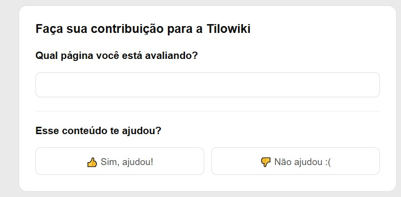
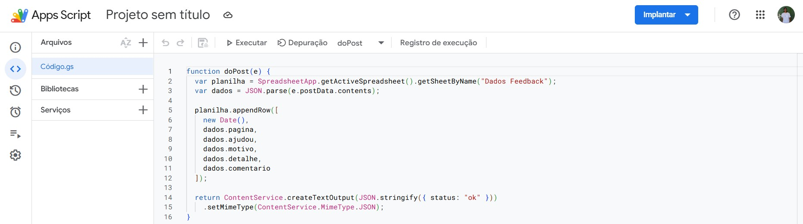

Feedback Gestão de Conhecimento
Problema / motivação
A ENETEC é atuamente uma empresa junior que se destaca pela sua gestão de conhecimento, isso adivindo majoritariamente da sua pagina no google sites, onde está guardado os pricipais projetos, processos da empresa além de várias outras infomações uteis para o cotidiano do membro da empresa. Visando expandir ainda mais esse projeto, eu me empenhei a desenvolver um sistema em que os membros pudessem participar de forma mais ativa no desenvolvimento dessa ferramenta.
Processo
Tendo esse objetivo em mente, eu desenvolvi, utilizando o apps script do próprio Google workspace, uma página de feedback no final das páginas do Google sites, onde os membros podiam avaliar a utilidade das páginas, essas avaliações ia para uma planilha para as lideranças poderem ver as maiores requisições de gestão de conhecimento dos membros
Resultado
Os resultados foram uma maior aproximação dos membros com o a gestão de conhecimento e um sistema de feedbacks que é hoje extremamente difundido na empresa.
 Planilha Feedback
Planilha Feedback

Página no google sites
Código feedbackStack
- ESP32
- C++ / Arduino
- TP4056
- LDO (HT7333/ME6211)